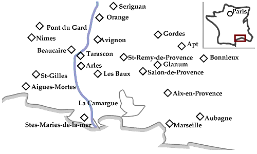

| 1日目 （土） |
成田11:20発--（ANA）--パリシャルル・シャルル・ド・ゴール空港（同日）16:45着--19:15発--（Air Inter）--マルセイユ空港20:35着----マルセイユ泊 |
| 2日目 （日） |
マルセイユサンシャルル駅12:12発--（SNCF）--ニーム駅13:29着--ニーム市内観光--円形闘技場、メゾン・カレ、泉水公園などなど----ニーム泊 |
| 3日目 （月） |
ニーム----（レンタカー:以下11日目まで移動は車）----エーグ・モルト----サン・ジル----ニーム泊 |
| 4日目 （火） |
ニーム----サント・マリー・ド・ラ・メール----カマルグ----フォンヴィエイユ泊 |
| 5日目 （水） |
フォンヴィエイユ----サロン・ド・プロヴァンス市内観光--サン・ミッシェル教会、アンペリ城、ノストラダムス博物館、クロー平野博物館などなど----サロン・ド・プロヴァンス泊 |
| 6日目 （木） |
サロン・ド・プロヴァンス----エクス・アン・プロヴァンス市内観光--ミラボー大通り、グラネ美術館、サンソヴール教会 、セザンヌのアトリエなどなど----エクス・アン・プロヴァンス泊 |
| 7日目 （金） |
エクス・アン・プロヴァンス----サント・ヴィクトワール山周遊（「セザンヌの道」をドライブ）またはサント・ヴィクトワールを眺めつつオーヴァーニュへ（マルセル・パニョルの故郷をたどる）----エクス・アン・プロヴァンス泊 |
| 8日目 （土） |
エクス・アン・プロヴァンス----アプト--市内および周辺の観光--アプトの市場、ジュリアン橋、ルシヨン、サン・サテュルナン・レザプト----アプト泊 |
| 9日目 （日） | アプト----サン・レミ・ド・プロヴァンス市内観光--グラナムの遺跡、サドの館、ゴッホ現代美術センターなどなど----サン・レミ・ド・プロヴァンス泊 |
| 10日目（月） | サン・レミ・ド・プロヴァンス----タラスコン----ボーケール----ヴィルヌーヴ・レザヴィニョン泊 |
| 11日目（火） | ヴィルヌーヴ・レザヴィニョン----アヴィニョン駅12:20発--（TGV乗換え）--パリリヨン駅15:39着----パリ泊 |
| 12日目（水） | パリ市内観光--ノートルダム教会、カルチェ・ラタン、サン・ジェルマンなどなど----パリ泊 |
| 13日目（木） | パリ市内観光--ポンピドゥーセンター、レ・アールなどなど----シャルル・シャルル・ド・ゴール空港20:00発--（ANA 機中泊）-- |
| 14日目（金） | --成田14:40着 |